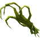
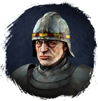

Коготь чащи
Предметы / Добыча
Открыть в интерактивной вики →
| Вес | 18 |
|---|---|
| Цена | 1 300 |
Описание
Компонент, используемый для изготовления  Гигантская Фляга Силы. Её создает
Гигантская Фляга Силы. Её создает
Гигантская Фляга Силы. Её создает 
Дарон в Гарнизоне Дмортера.| Ингредиент для изготовления Огромной фляги силы. Изготавливает Дарон в Гарнизоне Дмортер. |
Где найти
Применение
|
Как добыть
| Сбор в локации: |